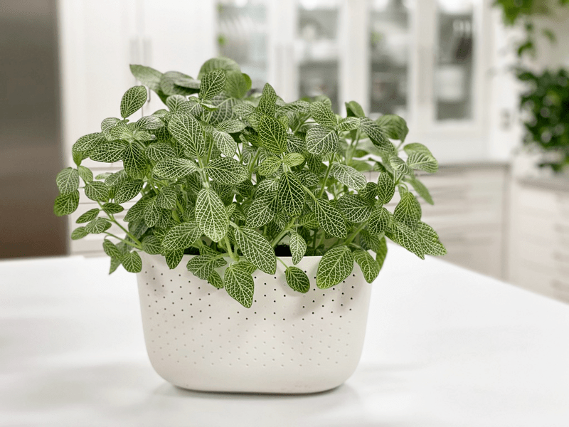
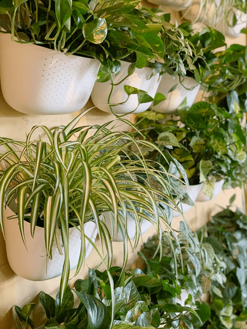
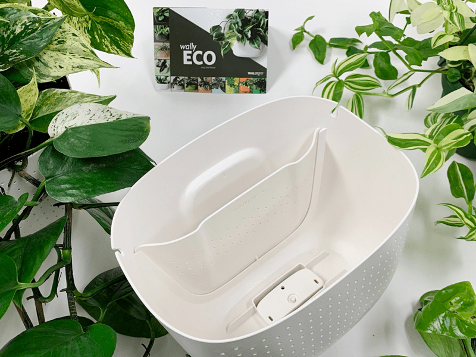
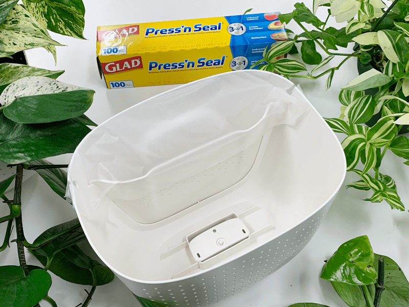
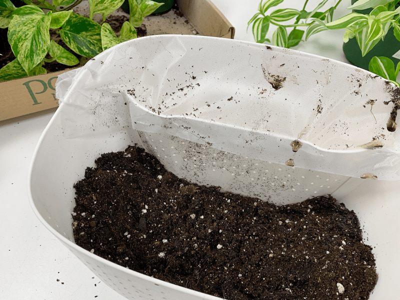
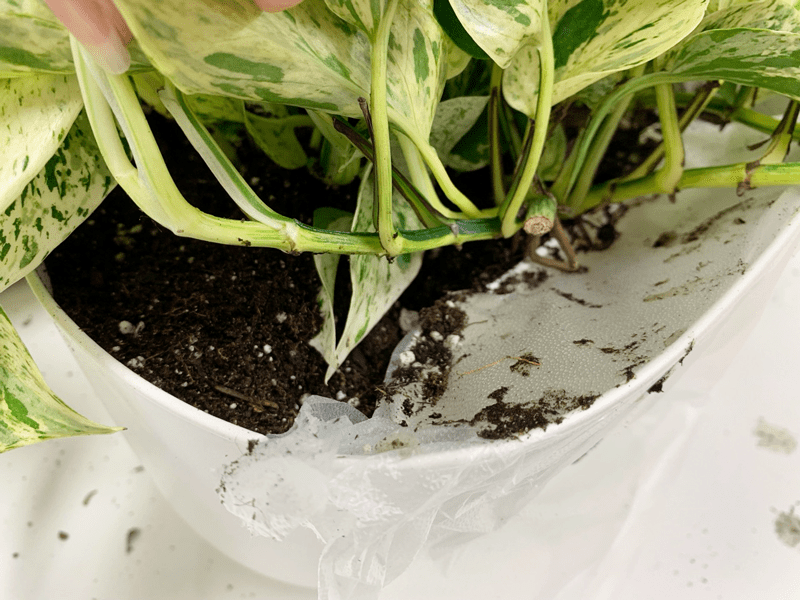
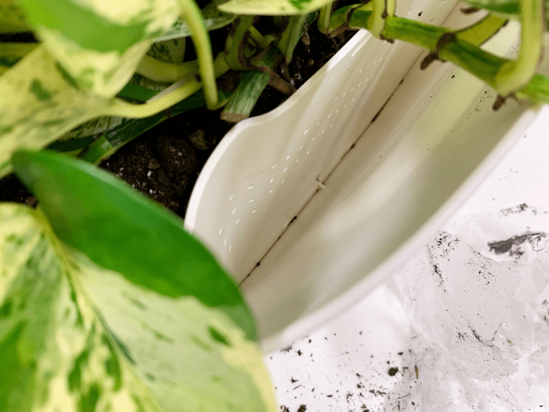

My Favorite Plant Pot | Wallygro!
I never thought that I could fall in love with a plant pot, but I did. It’s a true love story. I can’t recall how I stumbled upon WallyGro.com, but thank goodness I did! I had been doing some research on plant pots that could hang on the wall, since I wanted to create a Living Wall of houseplants. You can read all about that (here).

Not only did the fact that their pots hung on the wall with a simple screw pull me in, but the real kicker was when I read that the pots are made from 100% recycled material, which quickly got my attention! To date, WallyGro has diverted over 8 million plastic containers from oceans and landfills!!! I was hooked, and I wanted to support their mission. If you ever feel too “little” to make a change in this world, start by supporting companies that are doing that very thing!

Why I Love Wally Eco Pots
- Made from 100% recycled milk jugs.
- They can decrease total watering by up to 75%.
- It takes one screw to hold them in place.
- You can take them on and off the wall with great ease.
- They come in a broad array of colors to accent your home decor.
- Great way to maximize your space for your love of plants.
- These pots can be used indoors and outdoors.
- The Wally Eco planter was designed with plant health in mind. The perforated, breathable front panel promotes optimal plant health by allowing the soil to aerate naturally, and watering through the water reservoir feeds roots directly, allowing for even growth and helping to prevent overwatering.
How Wally Eco Pots Are Made
- Bottles made of #2 plastic (HDPE) are collected from around the country. About eight milk jugs go into each Wally Eco.
- Bottles are ground up, sorted, and cleaned, then formed into pellets. Raw HDPE is semi-transparent, like a milk jug.
- Pellets are melted down and mixed with different pigments, depending on which color of Wally Eco is being produced.
- Molten plastic is injected into a steel mold in the shape of the Wally Eco. Then any stray bits of plastic are shaved off.

The Plants I Used for My Living Wall
You are not limited to just these plants. I choose these because they have similar watering routines.
Potting Method that I Use
Below I am sharing my routine. I have repotted over 40 plants in the Wally Eco pots. See the photos below.
- New plant routine
- Upon bringing the plant home from the store, check for plant pests, give the plant a good wash, and treat it with neem oil (preventative maintenance).
- If you find plant pests, once treated, keep the plant quarantined for 2-4 weeks before adding to your other plants.
- Water the plant
- Start by watering your plant thoroughly a day or two before, or lightly water just before to help avoid transplant shock and keep the root ball together.
- Remove the plant
- Gently remove your plant from its pot by turning it sideways, supporting the main stem in one hand, and pulling the pot away with your other hand.
- If you are having trouble getting it out of the pot, use a knife to loosen the soil around the edges of the container.
- Prepare the Wally Eco pot
- Remove the divider and hardware from the base of the post. Flip the divide into the pot, making sure that it snaps into place. The planter will come with these instructions; I am sharing how I go about it.
- Clean your planter with hot, soapy water and pat dry. The planters are also dishwasher safe!
- Place a piece of Press ‘n’ Seal over the watering reservoir. After repotting over 40 plants in these pots, I found this to be most helpful! This prevents soil from getting into this space while you are monkeying around with the soil and plant. Trust me on this one (see photos).
- Pour a layer of fresh potting mix into the planter and pack it down, creating new space for roots to grow.
- Place your plant
- Place your plant, centered and upright, in its new home and add potting mix around it until it is secure.
- Make sure to pack the soil in until it reaches above the perforated holes in the divider, or water may run over the top of the soil and out the front panel.
- You will want to make sure the soil is packed down tight when planting, to avoid air pockets and ensure that soil is filled to cover the top holes of the reservoir panel.
- Gently remove the Press ‘n’ Seal, making sure that no soil drops in the watering reservoir.
- Finishing touches
- Once your plant is in place, give it another rinse to settle it in its new home.
- It will take a couple of weeks to recover from repotting, and in that time, it may need more frequent watering than usual, but keep it away from direct sun and hold off on fertilizing until it’s back to normal.
-

-
Remove the hardware from the base of the pot and snap the reservoir divider in place.
-

-
Place Press ‘n’ Seal in place, covering the watering reservoir.
-

-
Add a layer of soil to the bottom of the pot.
-

-
Place the plant in the center and pack soil around it on all sides.
-

-
Remove the Press ‘n’ Seal. See how it kept the soil out of there? Nice.
-

Watering Method
The Wally Eco features a built-in water channel that feeds roots directly and can decrease total watering by up to 75%.
- Water directly into the back channel of your Wally Eco by filling it to the top in one pour (roughly 2 cups of water).
- I use a measuring cup to ensure that I don’t overwater the plant.
- If you SLOWLY pour UNMEASURED water into the water reservoir, you risk overwatering the plant.
- Stop and wait for the water to be absorbed by the soil. When watered correctly, the soil will absorb the water before reaching the front panel. Some of the holes in the front panel (see photos for close-up) are purposely open, and some are not fully pushed through. Leave them as-is.
- Depending on the plant, that’s all the water your plant should need for 1-2 weeks.
- The water should not sit in the channel–if it does, that’s a sure sign that your soil is oversaturated with water!
- Their technology helps to aerate the soil, avoiding root rot.
- If creating a Living Wall, I choose plants that have the same watering schedule. You don’t have to do this; it just makes my watering routine easier.
Testing Soil Dryness
Use your finger or water meter to test the soil to see it is time to water; unless your plant likes moist soil at all times (as some tropicals do), a good rule of thumb is that if your finger goes into the soil at least 2” down and it feels dry, it’s time to water your plant again.
But the Pot Doesn’t Drain?!
- I always push to use plant pots that drain to assure that plants don’t suffer from root rot. I still stand by this, unless you use this planting system.
- Don’t worry about drainage; the perforated holes in the front of the planter help aerate the soil, providing essential oxygen to roots, discouraging root rot, and allowing excess water to evaporate.
- If you do accidentally overwater your plant, leave it alone until you feel the soil is dry again; this may take several weeks.
Setting the Wally Eco Pots on a Flat Surface
These pots are designed to hang on the wall, but they are not limited to that. They have a flat bottom, which means they can sit on a flat surface. If you do this and put a vining plant in it, be cautious that the weight of the wines don’t cause the pot to tip forward. See the photo below–all of the plants on the white floating shelves are in Wally Eco pots. See that lush pothos hanging in the corner? That’s a Wally Eco pot that I turned into a hanging pot. I will share below how I went about doing that. To the right of the lush pothos, you will see a peace lily plant and a pothos plant in one Wally Eco pot.

Hanging Wally Eco Pots From the Ceiling
Since I love these planters so much, I wanted to hang some from the ceiling. The reason I thought of this is that I have quite a few lush pothos plants that hang from the ceiling. I always struggled with watering because when I took them down to water and clean them, the macrame hangers would get all tangled in the vines… it was just overall pain. Once I saw how much the Wally Eco system decreased the amount of watering, I wanted to convert as many plants over to them as possible.
These planters are not designed to hang, so we did a little of my own engineering. I found chain hangers that had three chains connected by one “S” hook. Similar to (these). We drilled an appropriately sized hole (a little larger than the “S” hook) on each side of the post, about one inch down from the edge of the pot. We then drilled one hole on the back of the pot in the center.
Now I have several pots hanging from the ceiling, with lush vines spilling over the edges. To water, I just get on a stepladder and pour the water in the back of the reservoir. Ahhh, life got so much easier.
I hope you enjoyed this post. If you have any questions, please don’t hesitate to leave a comment below. blessings, amie sue
© AmieSue.com